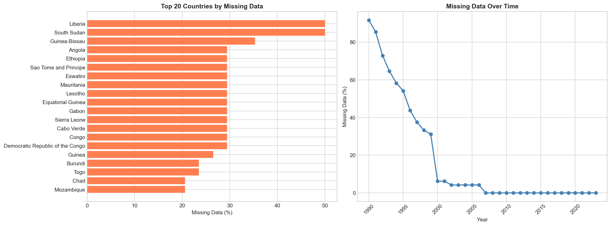
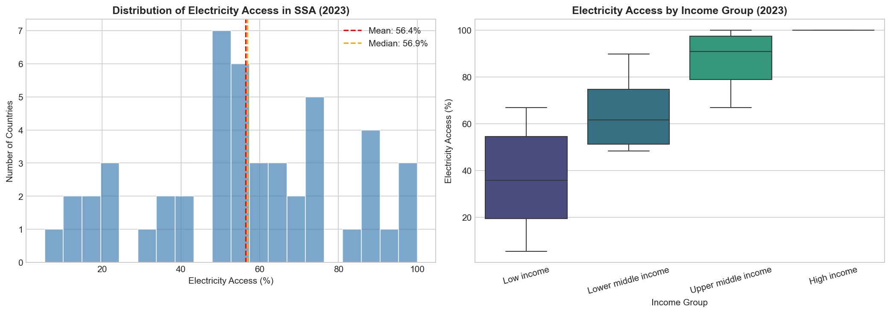
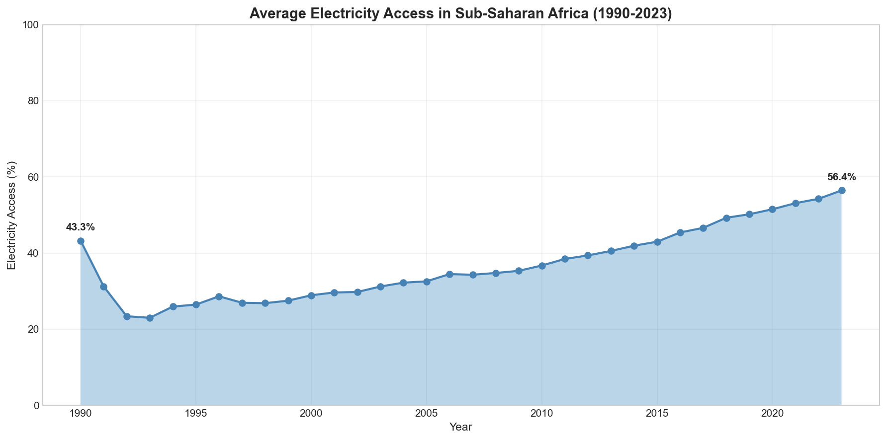
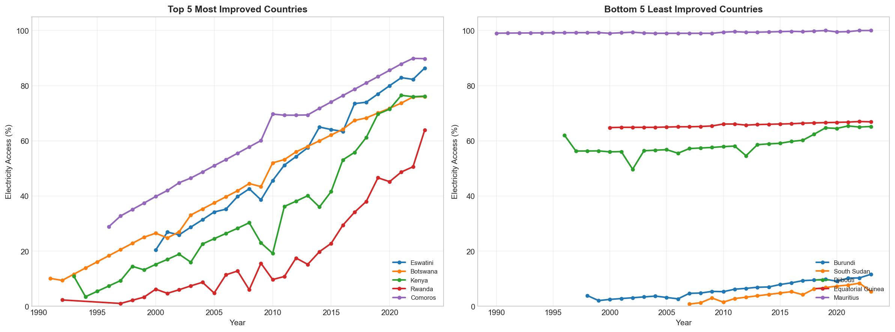
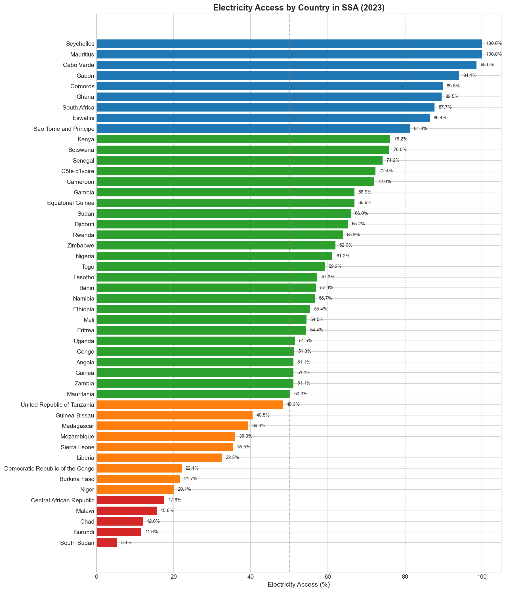
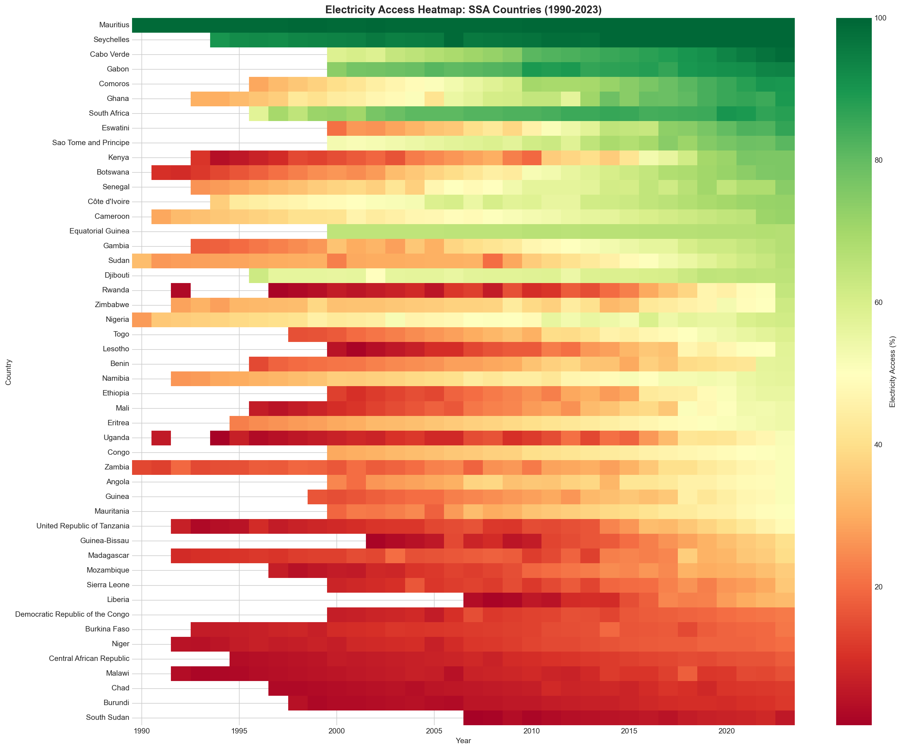
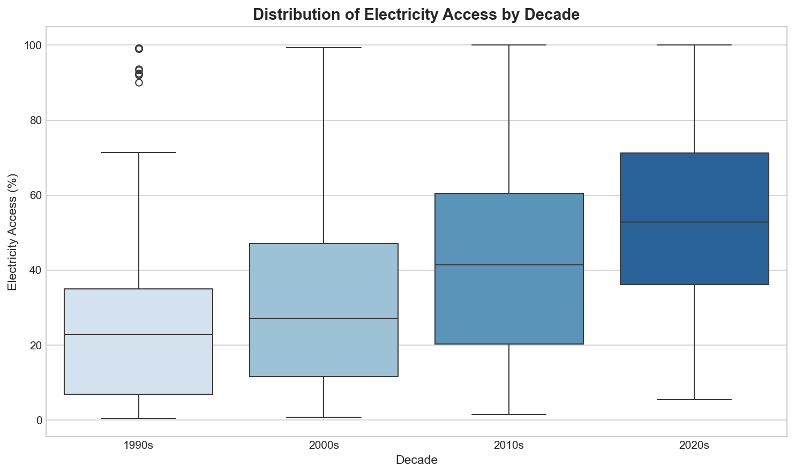
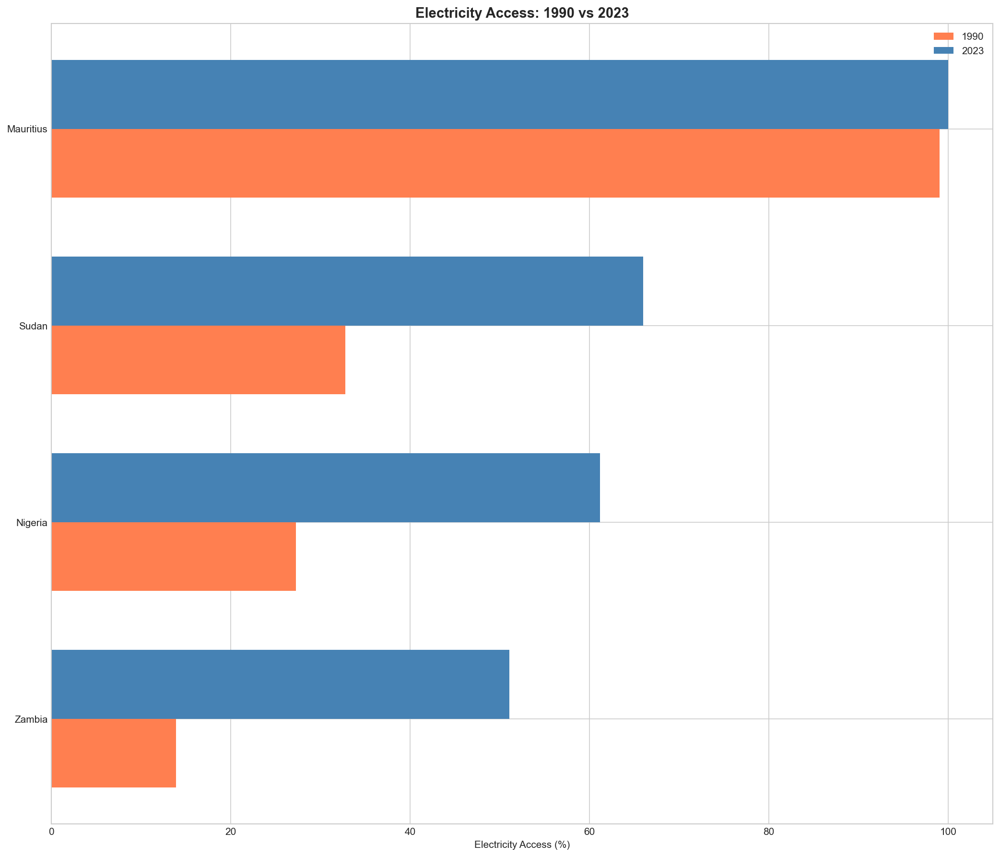

SDG 7: Electricity Access in Sub-Saharan Africa
Exploratory Data Analysis Report
Date: November 2025 | Scope: 50 Sub-Saharan African Countries | 1990-2023
Executive Summary
This report presents an exploratory data analysis of electricity access across Sub-Saharan Africa (SSA) using World Bank data (indicator EG.ELC.ACCS.ZS).
Key Findings from Data:
- SSA average electricity access: 23.9% (1990) → 51.5% (2023)
- Total change: +27.6 percentage points over 33 years
- Higher income countries show higher electricity access rates
- Kenya, Rwanda, and Ethiopia show the largest improvements in the dataset
1. Data Overview
Data Source
| Attribute | Details |
|---|
| Source | World Bank - World Development Indicators |
| Indicator | EG.ELC.ACCS.ZS (Access to electricity % of population) |
| Coverage | 50 Sub-Saharan African countries |
| Time Period | 1990-2023 (34 years) |
| Last Updated | October 2025 |
| License | CC BY-4.0 |
Data Quality Assessment

Observations:
- Left chart: Countries with highest missing data rates (Somalia, Mayotte, South Sudan have most gaps)
- Right chart: Missing data percentage decreases over time, with better coverage after 2000
2. Current State of Electricity Access (2023)
Distribution Analysis

Observations:
Left - Histogram:
- Distribution shows countries clustered at both low (<30%) and high (>70%) access levels
- Mean: ~51%, Median: ~53%
Right - Box Plot by Income Group:
- High income countries: Near 100% access
- Upper middle income: Median ~85%
- Lower middle income: Median ~55%
- Low income: Median ~30%
3. Historical Trends
SSA Regional Average Over Time

Observations:
- 1990: 23.9% average access
- 2023: 51.5% average access
- Total change: +27.6 percentage points
- Average annual change: +0.84 percentage points per year
4. Country Comparisons
Top Performers vs. Countries with Least Change

From the data:
Left chart: Countries with largest increase in electricity access over time
Right chart: Countries with smallest change or least data available
Countries with Largest Improvements (Data)
Ethiopia
~12% → ~55%
+43pp
All Countries Ranked (2023)

Country Tiers by Access Level:
- Highest access (>80%): Mauritius, Seychelles, South Africa, Gabon, Ghana, Cabo Verde
- Lowest access (<20%): Chad, Central African Republic, South Sudan, Burundi
5. Temporal Patterns
Heatmap: Countries × Years

Observations:
- Color gradient: Red (low access) → Yellow (medium) → Green (high access)
- White cells: Missing data
- Countries at top: Highest access throughout period
- Countries at bottom: Lowest access throughout period
Distribution by Decade

Observations:
- 1990s: Median ~25%
- 2000s: Median ~30%
- 2010s: Median ~45%
- 2020s: Median ~55%
6. Before & After Comparison (1990 vs 2023)

Observations:
- Coral bars: 1990 values
- Blue bars: 2023 values
- Gap between bars: Change over 33 years
7. Summary of Findings
What the Data Shows
1. Overall Trend
SSA average electricity access increased from 23.9% (1990) to 51.5% (2023), a change of +27.6 percentage points.
2. Income Group Differences
Higher income countries have higher electricity access rates. Low income countries have median access of ~30%.
3. Country Variation
Wide variation exists: some countries have >95% access while others remain below 20%.
4. Data Availability
Data coverage improves over time. Some countries (Somalia, South Sudan, Mayotte) have significant data gaps.
Data Limitations
- Dataset contains only percentage values - no information on causes of changes
- Some countries have missing data, especially before 2000
- National averages may mask regional disparities within countries